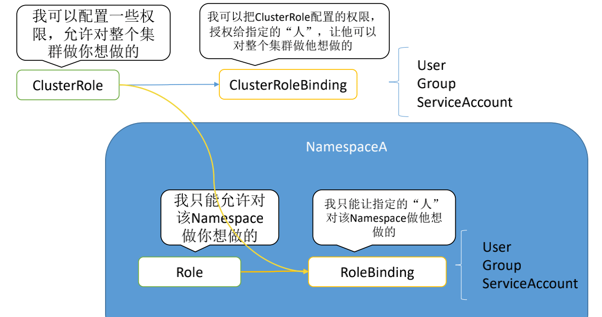
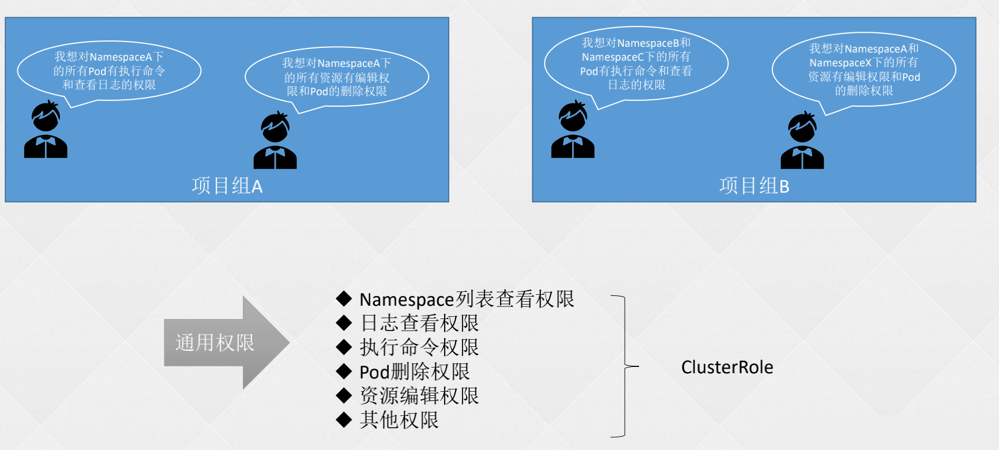
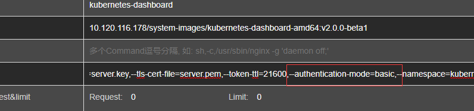
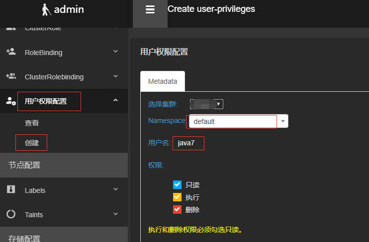
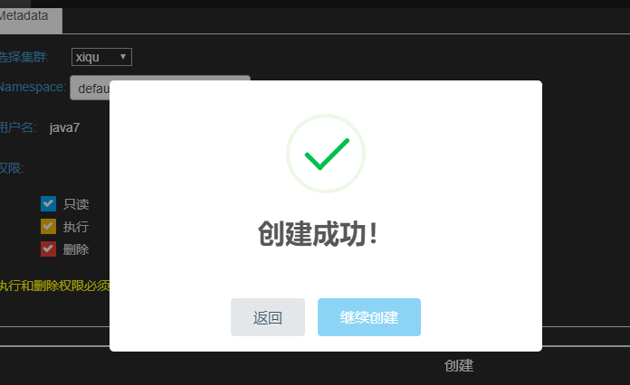
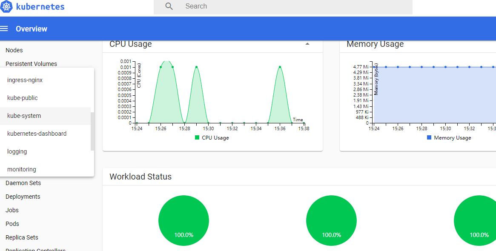
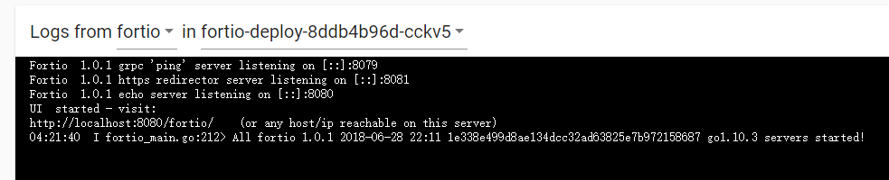
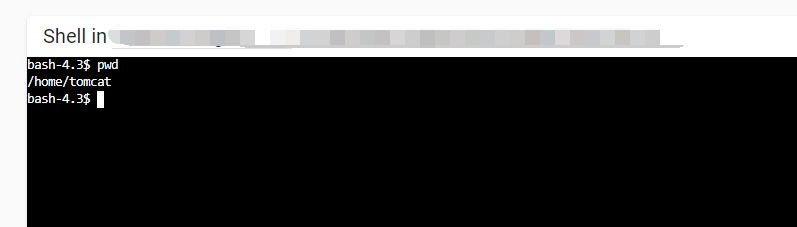
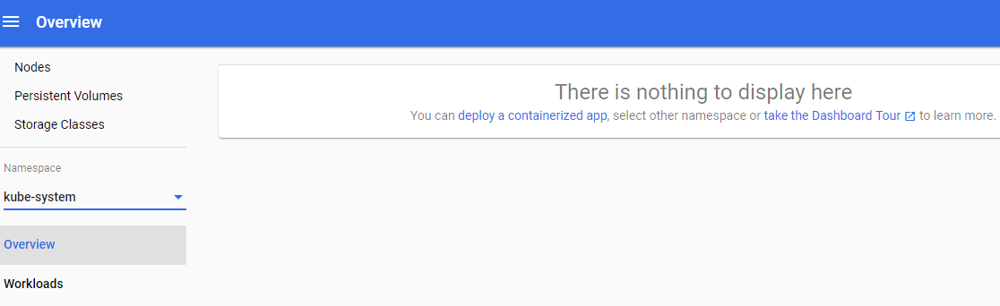

Kubernetes: k8s 进阶篇-细粒度权限控制
- TAGS: Kubernetes
进阶-细粒度权限控制
RBAC
什么是RBAC？
RBAC 全称Role-based access control 即基于角色（Role）的访问控制，它是一种基于组织中用户的角色来调节控制对 计算机或网络资源的访问的方法。
RBAC 鉴权机制使用 rbac.authorization.k8s.io API 组 来驱动鉴权决定，允许你通过 Kubernetes API 动态配置策略。
要启用 RBAC，在启动 API 服务器 时将 –authorization-mode 参数设置为一个逗号分隔的列表并确保其中包含 RBAC。
RBAC分类介绍（API 对象）
RBAC有4种顶级资源

- Role
- ClusterRole
- RoleBinding
- ClusterRoleBinding
资源介绍
Role：角色，包含一组权限的规则。没有拒绝规则，只是附加允许。Namespace隔离，只作用于命名空间内！
ClusterRole：集群角色，和Role一样。和Role的区别，Role是只作用于命名空间内，ClusterRole作用于整个集群！
RoleBinding：作用于命令空间内，将ClusterRole或者Role绑定到User、Group、ServiceAccount！
ClusterRoleBinding：作用于整个集群。
中文官方文档：https://kubernetes.io/zh/docs/reference/access-authn-authz/rbac/
范例
- apiGroup 资源属于哪个组的 https://kubernetes.io/docs/reference/using-api/#api-groups
- resoures 资源类型，* 代表所有，查询
kubectl api-resources- Subresource
- verbs 可执行的操作，* 代表所有
- ["get", "list", "watch", "create", "update", "patch", "delete", "post"]
- https://kubernetes.io/docs/reference/access-authn-authz/authorization/
子资源检查脚本
_list=($(kubectl get --raw / |grep "^ \"/api"|sed 's/[",]//g')); for _api in ${_list[@]}; do _aruyo=$(kubectl get --raw ${_api} | jq .resources); if [ "x${_aruyo}" != "xnull" ]; then echo; echo "===${_api}==="; kubectl get --raw ${_api} | jq -r ".resources[].name"; fi; done 或者 _list=($(kubectl get --raw / |grep "^ \"/api"|sed 's/[",]//g')); for _api in ${_list[@]}; do _aruyo=$(kubectl get --raw ${_api} | jq .resources); if [ "x${_aruyo}" != "xnull" ]; then echo; echo "===${_api}==="; kubectl get --raw ${_api} | jq -r ".resources[].name"; fi; done
root@VM-8-13-ubuntu:/opt/devops/jenkinsfile#_list=($(kubectl get --raw / |grep "^ \"/api"|sed 's/[",]//g')); for _api in ${_list[@]}; do _aruyo=$(kubectl get --raw ${_api} | jq .resources); if [ "x${_aruyo}" != "xnull" ]; then echo; echo "===${_api}==="; kubectl get --raw ${_api} | jq -r ".resources[].name"; fi; donee ===/api/v1=== bindings componentstatuses configmaps endpoints events limitranges namespaces namespaces/finalize namespaces/status nodes nodes/proxy nodes/status persistentvolumeclaims persistentvolumeclaims/status persistentvolumes persistentvolumes/status pods pods/attach pods/binding pods/ephemeralcontainers pods/eviction pods/exec pods/log pods/portforward pods/proxy pods/status podtemplates replicationcontrollers replicationcontrollers/scale replicationcontrollers/status resourcequotas resourcequotas/status secrets serviceaccounts serviceaccounts/token services services/proxy services/status ===/apis/acme.cert-manager.io/v1=== challenges challenges/status orders orders/status ===/apis/admissionregistration.k8s.io/v1=== mutatingwebhookconfigurations validatingadmissionpolicies validatingadmissionpolicies/status validatingadmissionpolicybindings validatingwebhookconfigurations ===/apis/apiextensions.k8s.io/v1=== customresourcedefinitions customresourcedefinitions/status ===/apis/apiregistration.k8s.io/v1=== apiservices apiservices/status ===/apis/apps/v1=== controllerrevisions daemonsets daemonsets/status deployments deployments/scale deployments/status replicasets replicasets/scale replicasets/status statefulsets statefulsets/scale statefulsets/status ===/apis/authentication.k8s.io/v1=== selfsubjectreviews tokenreviews ===/apis/authorization.k8s.io/v1=== localsubjectaccessreviews selfsubjectaccessreviews selfsubjectrulesreviews subjectaccessreviews ===/apis/autoscaling/v1=== horizontalpodautoscalers horizontalpodautoscalers/status ===/apis/autoscaling/v2=== horizontalpodautoscalers horizontalpodautoscalers/status ===/apis/batch/v1=== cronjobs cronjobs/status jobs jobs/status ===/apis/cert-manager.io/v1=== certificates certificates/status certificaterequests certificaterequests/status issuers issuers/status clusterissuers clusterissuers/status ===/apis/certificates.k8s.io/v1=== certificatesigningrequests certificatesigningrequests/approval certificatesigningrequests/status ===/apis/configuration.konghq.com/v1=== kongconsumers kongconsumers/status kongplugins kongplugins/status kongingresses kongingresses/status kongclusterplugins kongclusterplugins/status ===/apis/configuration.konghq.com/v1alpha1=== konglicenses konglicenses/status ingressclassparameterses kongvaults kongvaults/status ===/apis/configuration.konghq.com/v1beta1=== kongconsumergroups kongconsumergroups/status tcpingresses tcpingresses/status kongupstreampolicies kongupstreampolicies/status udpingresses udpingresses/status ===/apis/coordination.k8s.io/v1=== leases ===/apis/crd.k8s.amazonaws.com/v1alpha1=== eniconfigs ===/apis/discovery.k8s.io/v1=== endpointslices ===/apis/elbv2.k8s.aws/v1alpha1=== targetgroupbindings targetgroupbindings/status ===/apis/elbv2.k8s.aws/v1beta1=== targetgroupbindings targetgroupbindings/status ingressclassparams ===/apis/events.k8s.io/v1=== events ===/apis/flowcontrol.apiserver.k8s.io/v1=== flowschemas flowschemas/status prioritylevelconfigurations prioritylevelconfigurations/status ===/apis/flowcontrol.apiserver.k8s.io/v1beta3=== flowschemas flowschemas/status prioritylevelconfigurations prioritylevelconfigurations/status ===/apis/metrics.eks.amazonaws.com/v1=== kcm kcm/metrics ksh ksh/metrics ===/apis/metrics.k8s.io/v1beta1=== nodes pods ===/apis/networking.k8s.aws/v1alpha1=== policyendpoints policyendpoints/status ===/apis/networking.k8s.io/v1=== ingressclasses ingresses ingresses/status networkpolicies ===/apis/node.k8s.io/v1=== runtimeclasses ===/apis/policy/v1=== poddisruptionbudgets poddisruptionbudgets/status ===/apis/rbac.authorization.k8s.io/v1=== clusterrolebindings clusterroles rolebindings roles ===/apis/scheduling.k8s.io/v1=== priorityclasses ===/apis/storage.k8s.io/v1=== csidrivers csinodes csistoragecapacities storageclasses volumeattachments volumeattachments/status ===/apis/storage.k8s.io/v1beta1=== volumeattributesclasses ===/apis/vpcresources.k8s.aws/v1alpha1=== cninodes ===/apis/vpcresources.k8s.aws/v1beta1=== securitygrouppolicies
Role 示例
Role 总是用来在某个名字空间内设置访问权限；在你创建 Role 时，你必须指定该 Role 所属的名字空间
apiVersion: rbac.authorization.k8s.io/v1 kind: Role metadata: namespace: default name: pod-reader rules: - apiGroups: [""] # "" 标明 core API 组 resources: ["pods"] verbs: ["get", "watch", "list"]
ClusterRole 示例
ClusterRole 有若干用法。你可以用它来：
- 定义对某名字空间域对象的访问权限，并将在各个名字空间内完成授权；
- 为名字空间作用域的对象设置访问权限，并跨所有名字空间执行授权；
- 为集群作用域的资源定义访问权限。
apiVersion: rbac.authorization.k8s.io/v1 kind: ClusterRole metadata: # "namespace" 被忽略，因为 ClusterRoles 不受名字空间限制 name: secret-reader rules: - apiGroups: [""] # 在 HTTP 层面，用来访问 Secret 对象的资源的名称为 "secrets" resources: ["secrets"] verbs: ["get", "watch", "list"]
RoleBinding 示例
下面的例子中的 RoleBinding 将 "pod-reader" Role 授予在 "default" 名字空间中的用户 "jane"。 这样，用户 "jane" 就具有了读取 "default" 名字空间中 pods 的权限。
apiVersion: rbac.authorization.k8s.io/v1 # 此角色绑定允许 "jane" 读取 "default" 名字空间中的 Pods kind: RoleBinding metadata: name: read-pods namespace: default subjects: # 你可以指定不止一个“subject（主体）” - kind: User # 这里可以是User,Group,ServiceAccount name: jane # "name" 是不区分大小写的 apiGroup: rbac.authorization.k8s.io # 可不写 roleRef: # "roleRef" 指定与某 Role 或 ClusterRole 的绑定关系 kind: Role # 此字段必须是 Role 或 ClusterRole name: pod-reader # 此字段必须与你要绑定的 Role 或 ClusterRole 的名称匹配 apiGroup: rbac.authorization.k8s.io # 可不写
subject 主体推荐使用 serviceAccount，user 还要重启 apiserver
RoleBinding 引用 ClusterRole
RoleBinding 也可以引用 ClusterRole，以将对应 ClusterRole 中定义的访问权限授予 RoleBinding 所在名字空间的资源。这种引用使得你可以跨整个集群定义一组通用的角色， 之后在多个名字空间中复用！
下面的例子中的 RoleBinding，将"secret-reader" ClusterRole授予在"development" namespace中的用户"dave"。这样，用户 "dave" 就具有了读取 "development" 名字空间中 pods 的权限。
apiVersion: rbac.authorization.k8s.io/v1 # 此角色绑定使得用户 "dave" 能够读取 "default" 名字空间中的 Secrets # 你需要一个名为 "secret-reader" 的 ClusterRole kind: RoleBinding metadata: name: read-secrets # RoleBinding 的名字空间决定了访问权限的授予范围。 # 这里仅授权在 "development" 名字空间内的访问权限。 namespace: development subjects: - kind: User name: dave # 'name' 是不区分大小写的 apiGroup: rbac.authorization.k8s.io roleRef: kind: ClusterRole name: secret-reader apiGroup: rbac.authorization.k8s.io
ClusterRoleBinding 示例
要跨整个集群完成访问权限的授予，你可以使用一个 ClusterRoleBinding。 下面的 ClusterRoleBinding 允许 "manager" 组内的所有用户访问任何名字空间中的 Secrets。
apiVersion: rbac.authorization.k8s.io/v1 # 此集群角色绑定允许 “manager” 组中的任何人访问任何名字空间中的 secrets kind: ClusterRoleBinding metadata: name: read-secrets-global subjects: - kind: Group name: manager # 'name' 是不区分大小写的 apiGroup: rbac.authorization.k8s.io roleRef: kind: ClusterRole name: secret-reader apiGroup: rbac.authorization.k8s.io
注意：
创建了绑定之后，你不能再修改绑定对象所引用的 Role 或 ClusterRole。 试图改变绑定对象的 roleRef 将导致合法性检查错误。 如果你想要改变现有绑定对象中 roleRef 字段的内容，必须删除重新创建绑定对象。
这种限制有两个主要原因：
- 针对不同角色的绑定是完全不一样的绑定。要求通过删除/重建绑定来更改 roleRef, 这样可以确保要赋予绑定的所有主体会被授予新的角色（而不是在允许修改 roleRef 的情况下导致所有现有主体胃镜验证即被授予新角色对应的权限）。
- 将 roleRef 设置为不可以改变，这使得可以为用户授予对现有绑定对象的 update 权限， 这样可以让他们管理主体列表，同时不能更改被授予这些主体的角色。
命令 kubectl auth reconcile 可以创建或者更新包含 RBAC 对象的清单文件， 并且在必要的情况下删除和重新创建绑定对象，以改变所引用的角色
聚合的 ClusterRole
将若干 ClusterRole 聚合（Aggregate） 起来，形成一个复合的 ClusterRole。
下面是一个聚合 ClusterRole 的示例： 聚合符合标签的 clusterrole
apiVersion: rbac.authorization.k8s.io/v1
kind: ClusterRole
metadata:
name: monitoring
aggregationRule:
clusterRoleSelectors:
- matchLabels:
rbac.example.com/aggregate-to-monitoring: "true"
rules: [] # 控制面自动填充这里的规则
-------
apiVersion: rbac.authorization.k8s.io/v1
kind: ClusterRole
metadata:
name: monitoring-endpoints
labels:
rbac.example.com/aggregate-to-monitoring: "true"
# 当你创建 "monitoring-endpoints" ClusterRole 时，
# 下面的规则会被添加到 "monitoring" ClusterRole 中
rules:
- apiGroups: [""]
resources: ["services", "endpoints", "pods"]
verbs: ["get", "list", "watch"]
下面的 ClusterRoles 让默认角色 "admin" 和 "edit" 拥有管理自定义资源 "CronTabs" 的权限， "view" 角色对 CronTab 资源拥有读操作权限。 你可以假定 CronTab 对象在 API 服务器所看到的 URL 中被命名为 "crontabs"。
apiVersion: rbac.authorization.k8s.io/v1
kind: ClusterRole
metadata:
name: aggregate-cron-tabs-edit
labels:
# 添加以下权限到默认角色 "admin" 和 "edit" 中
rbac.authorization.k8s.io/aggregate-to-admin: "true"
rbac.authorization.k8s.io/aggregate-to-edit: "true"
rules:
- apiGroups: ["stable.example.com"]
resources: ["crontabs"]
verbs: ["get", "list", "watch", "create", "update", "patch", "delete"]
---
kind: ClusterRole
apiVersion: rbac.authorization.k8s.io/v1
metadata:
name: aggregate-cron-tabs-view
labels:
# 添加以下权限到 "view" 默认角色中
rbac.authorization.k8s.io/aggregate-to-view: "true"
rules:
- apiGroups: ["stable.example.com"]
resources: ["crontabs"]
verbs: ["get", "list", "watch"]
RBAC 企业实战
如何管理权限和用户

创建通用权限用 clusterrole 管理。

如何进行用户管理？
- 专门有个名称空间存放 sa。
不同用户不同权限
需求：
- 用户one可以查看default、kube-system下Pod的日志
- 用户two可以在default下的Pod中执行命令，并且可以删除Pod
分析：
- 查看 pod 日志、pod 执行命令、删除 pod 都是通用权限，分别创建 clusterrole 即可。
- 切换名称空间的通用权限，创建一个 clusterrole。
创建通用权限
--- apiVersion: rbac.authorization.k8s.io/v1 kind: ClusterRole metadata: name: namespace-readonly rules: - apiGroups: - "" resources: - namespaces verbs: - get - list - watch - apiGroups: - metrics.k8s.io resources: - pods verbs: - get - list - watch --- apiVersion: rbac.authorization.k8s.io/v1 kind: ClusterRole metadata: name: pod-delete rules: - apiGroups: - "" resources: - pods verbs: - get - list - delete --- apiVersion: rbac.authorization.k8s.io/v1 kind: ClusterRole metadata: name: pod-exec rules: - apiGroups: - "" resources: - pods verbs: - get - list - apiGroups: - "" resources: - pods/exec verbs: - create
创建用户
kubectl create ns kube-users kubectl create sa one two -n kube-users
绑定权限
绑定全局命名空间查看权限：
kubectl create clusterrolebinding namespace-readonly \ --clusterrole=namespace-readonly --serviceaccount=system:serviceaccounts:kube-users
绑定权限：
kubectl create rolebinding one-pod-log \ --clusterrole=pod-log --serviceaccount=kube-users:one --namespace=kube-system kubectl create rolebinding one-pod-log \ --clusterrole=pod-log --serviceaccount=kube-users:one --namespace=default kubectl create rolebinding two-pod-exec \ --clusterrole=pod-exec --serviceaccount=kube-users:two --namespace=default kubectl create rolebinding two-pod-delete \ --clusterrole=pod-delete --serviceaccount=kube-users:two --namespace=default
Dashboard使用用户名密码形式登录
1、基本说明
在生产环境使用k8s以后，大部分应用都实现了高可用，不仅降低了维护成本， 也简化了很多应用的部署成本，但是同时也带来了诸多问题。比如开发可能需要 查看自己的应用状态、连接信息、日志、执行命令等。
使用k8s后，业务应用以Pod为单位，不像之前的以服务器为单位，可以直接通过 登录服务器进行相关操作。当业务应用使用k8s部署后，k8s官方的dashboard虽 然可以进行查看日志、执行命令等基本操作，但是作为运维人员，不想让开发操 作或查看自己范围之外的Pod，此时就要使用RBAC进行相关的权限配置。
本文章主要讲解两方面的问题：
- 使用用户名密码登录Dashboard
- 对已登录用户进行权限配置，实现只能操作自己Namespace的Pod，不能进入到未授权的其他Namespace
2、更改Dashboard认证方式
为了方便开发和运维人员登录Dashboard，需要将Dashboard登录方式用户名密码认证（用户名密码和Token可以同时开启）。
使用Ratel将kubernetes-dashboard的deployment的–authentication-mode改成basic即可，未安装Ratel的可以使用kubectl edit进行更改，更改完成会自动重启。

之后更改kube-apiserver配置添加
vim /usr/lib/systemd/system/kube-apiserver.service #增加如下行 --basic-auth-file=/etc/kubernetes/basic_auth_file
basic_auth_file为存储账号密码的文件，格式如下：
xxx1_2019,xxx1,3,"system:authentication" xxx2_2019,xxx2,4,"system:authentication" xxx3_2019,xxx3,5,"system:authentication" xxx4_2019,xxx4,6,"system:authentication"
依次是密码、用户名、ID号、用户组，因为下面会为已登录的用户进行授权，所以把组设置成了system:authentication，按需更改。
systemctl daemon-reload systemctl restart kube-apiserver
3、添加默认权限
首先配置一个system:authentication组允许查询namespace列表（因为进入到指定namespace，必须能list该集群的namespace）:
mkdir -p /root/rbac && cd /root/rbac
vim namespaceReadonly.yaml
apiVersion: rbac.authorization.k8s.io/v1
kind: ClusterRole
metadata:
annotations:
rbac.authorization.kubernetes.io/autoupdate: "true"
labels:
kubernetes.io/bootstrapping: rbac-defaults
rbac.authorization.k8s.io/aggregate-to-edit: "true"
name: ratel-namespace-readonly
rules:
- apiGroups:
- ""
resources:
- namespaces
verbs:
- get
- list
- watch
- apiGroups:
- metrics.k8s.io
resources:
- pods
verbs:
- get
- list
- watch
---
apiVersion: rbac.authorization.k8s.io/v1
kind: ClusterRoleBinding
metadata:
name: ratel-namespace-readonly
roleRef:
apiGroup: rbac.authorization.k8s.io
kind: ClusterRole
name: ratel-namespace-readonly
subjects:
- apiGroup: rbac.authorization.k8s.io
kind: Group
name: system:authentication
kubectl create -f namespaceReadonly.yaml
创建查看namespace资源的权限
vim view-resource.yaml
apiVersion: rbac.authorization.k8s.io/v1 kind: ClusterRole metadata: name: ratel-resource-readonly rules: - apiGroups: - "" resources: - configmaps - endpoints - persistentvolumeclaims - pods - replicationcontrollers - replicationcontrollers/scale - serviceaccounts - services verbs: - get - list - watch - apiGroups: - "" resources: - bindings - events - limitranges - namespaces/status - pods/log - pods/status - replicationcontrollers/status - resourcequotas - resourcequotas/status verbs: - get - list - watch - apiGroups: - "" resources: - namespaces verbs: - get - list - watch - apiGroups: - apps resources: - controllerrevisions - daemonsets - deployments - deployments/scale - replicasets - replicasets/scale - statefulsets - statefulsets/scale verbs: - get - list - watch - apiGroups: - autoscaling resources: - horizontalpodautoscalers verbs: - get - list - watch - apiGroups: - batch resources: - cronjobs - jobs verbs: - get - list - watch - apiGroups: - extensions resources: - daemonsets - deployments - deployments/scale - ingresses - networkpolicies - replicasets - replicasets/scale - replicationcontrollers/scale verbs: - get - list - watch - apiGroups: - policy resources: - poddisruptionbudgets verbs: - get - list - watch - apiGroups: - networking.k8s.io resources: - networkpolicies verbs: - get - list - watch - apiGroups: - metrics.k8s.io resources: - pods verbs: - get - list - watch
kubectl create -f view-resource.yaml
创建Pod执行权限
vim podExec.yaml
apiVersion: rbac.authorization.k8s.io/v1 kind: ClusterRole metadata: name: ratel-pod-exec rules: - apiGroups: - "" resources: - pods - pods/log verbs: - get - list - apiGroups: - "" resources: - pods/exec verbs: - create
创建Pod删除权限
vim podDelete.yaml
apiVersion: rbac.authorization.k8s.io/v1
kind: ClusterRole
metadata:
name: ratel-pod-delete
rules:
- apiGroups:
- ""
resources:
- pods
verbs:
- get
- list
- delete
上述权限创建完成后，只需要将对应的用户绑定对应的权限即可实现不同的用户在不同的namespace实现不同的权限。
对RBAC不熟悉的可以参考https://www.cnblogs.com/dukuan/p/9948063.html
4、配置权限
案例：假设有一个用户叫java7，需要访问default命名空间下的资源，可以在容器执行命令和查看日志
添加权限之前是不能查看任何信息的:
方式1
方式一：使用Ratel一键配置，选择对应的集群、Namespace、用户名、勾选权限点击创建即可


创建成功后再次登录，即可查看该Namespace的信息

查看日志：

执行命令：

同时也不能查看其他namespace的资源

方式2
使用yaml文件配置
使用Ratel进行权限配置，在配置权限后在对应的namespace下创建对应的RoleBinding，如下：
[root@k8s-master01 ~]# kubectl get rolebinding NAME AGE gitlab 112d ratel-pod-delete-java7 11m ratel-pod-exec-java7 11m ratel-resource-readonly-java7 11m
内容如下：
ource-readonly-java7 -o yaml
apiVersion: v1
items:
- apiVersion: rbac.authorization.k8s.io/v1
kind: RoleBinding
metadata:
name: ratel-pod-delete-java7
namespace: default
roleRef:
apiGroup: rbac.authorization.k8s.io
kind: ClusterRole
name: ratel-pod-delete
subjects:
- apiGroup: rbac.authorization.k8s.io
kind: User
name: java7
- apiVersion: rbac.authorization.k8s.io/v1
kind: RoleBinding
metadata:
name: ratel-pod-exec-java7
namespace: default
roleRef:
apiGroup: rbac.authorization.k8s.io
kind: ClusterRole
name: ratel-pod-exec
subjects:
- apiGroup: rbac.authorization.k8s.io
kind: User
name: java7
- apiVersion: rbac.authorization.k8s.io/v1
kind: RoleBinding
metadata:
name: ratel-resource-readonly-java7
namespace: default
roleRef:
apiGroup: rbac.authorization.k8s.io
kind: ClusterRole
name: ratel-resource-readonly
subjects:
- apiGroup: rbac.authorization.k8s.io
kind: User
name: java7
kind: List
metadata:
resourceVersion: ""
selfLink: ""
在没有安装Ratel的情况下，可以使用上述yaml内容直接创建至对应的namespace下即可完成权限配置。
上述只是实现了对常用资源的权限控制，其他权限控制类似。
Kubernetes多集群资源管理平台Ratel安装可以参考：https://github.com/dotbalo/ratel-doc
Ratel 工具图形化管理多 k8s 集群
Ratel 介绍
个人开发项目，主要用来降低学习难度，适合集群管理员
安装Ratel
安装说明
集群安装配置需要两类文件: servers.yaml和集群管理的kubeconfig文件
servers.yaml是ratel的配置文件, 格式如下:
- serverName: 'xxx' serverAddress: 'https://1.1.1.1:8443' #serverAdminUser: 'xxx' #serverAdminPassword: 'xxx#' serverAdminToken: 'null' serverDashboardUrl: "https://k8s.xxx.com.cn/#" production: 'false' kubeConfigPath: "/mnt/xxx.config" harborConfig: "HarborUrl, HarborUsername, HarborPassword, HarborEmail"
其中管理的方式有两种(Token暂不支持): 账号密码和kubeconfig形式, 只需配置一种即可, kubeconfig优先级高
参数解析:
- serverName: 集群别名
- serverAddress: Kubernetes APIServer地址
- serverAdminUser: Kubernetes管理员账号(需要配置basic auth)
- serverAdminPassword: Kubernetes管理员密码
- serverAdminToken: Kubernetes管理员Token // 暂不支持
- serverDashboardUrl: Kubernetes官方dashboard地址，1.x版本需要添加/#!，2.x需要添加/#
- kubeConfigPath: Kubernetes kube.config路径(绝对路径，这个路径不是宿主机的本地路径，而是1.2小节secret的挂载路径，一般可以不改/mnt)
- harborConfig: 对于多集群管理的情况下，可能会存在不同的harbor仓库，配置此参数可以在拷贝资源的时候自动替换harbor配置
- kubeConfigPath 通过secret挂载到容器的/mnt目录或者其他目录
本文档是将Ratel安装在Kubernetes集群，如果没有Kubernetes集群，可以参考本人写的另一篇文章，CentOS 8二进制高可用安装Kubernetes集群: https://www.cnblogs.com/dukuan/p/11780729.html
创建Secret
假设配置两个集群，对应的kubeconfig是test1.config和test2.config ratel配置文件servers.yaml内容如下:
- serverName: 'test1' serverAddress: 'https://1.1.1.1:8443' #serverAdminUser: 'xxx' #serverAdminPassword: 'xxx#' serverAdminToken: 'null' serverDashboardUrl: "https://k8s.test1.com.cn/#" production: 'false' kubeConfigPath: "/mnt/test1.config" harborConfig: "HarborUrl, HarborUsername, HarborPassword, HarborEmail" - serverName: 'test2' serverAddress: 'https://1.1.1.2:8443' #serverAdminUser: 'xxx' #serverAdminPassword: 'xxx#' serverAdminToken: 'null' serverDashboardUrl: "https://k8s.test2.com.cn/#!" production: 'false' kubeConfigPath: "/mnt/test2.config" harborConfig: "HarborUrl, HarborUsername, HarborPassword, HarborEmail"
创建Secret:
kubectl create secret generic ratel-config --from-file=test1.config --from-file=test2.config --from-file=servers.yaml -n kube-system
创建RBAC
#创建权限管理namespace kubectl create ns kube-users #然后添加如下的ClusterroleBinding vim ratel-rbac.yaml apiVersion: v1 items: - apiVersion: rbac.authorization.k8s.io/v1 kind: ClusterRole metadata: annotations: rbac.authorization.kubernetes.io/autoupdate: "true" labels: kubernetes.io/bootstrapping: rbac-defaults rbac.authorization.k8s.io/aggregate-to-edit: "true" name: ratel-namespace-readonly rules: - apiGroups: - "" resources: - namespaces verbs: - get - list - watch - apiGroups: - metrics.k8s.io resources: - pods verbs: - get - list - watch - apiVersion: rbac.authorization.k8s.io/v1 kind: ClusterRole metadata: name: ratel-pod-delete rules: - apiGroups: - "" resources: - pods verbs: - get - list - delete - apiVersion: rbac.authorization.k8s.io/v1 kind: ClusterRole metadata: name: ratel-pod-exec rules: - apiGroups: - "" resources: - pods - pods/log verbs: - get - list - apiGroups: - "" resources: - pods/exec verbs: - create - apiVersion: rbac.authorization.k8s.io/v1 kind: ClusterRole metadata: annotations: rbac.authorization.kubernetes.io/autoupdate: "true" name: ratel-resource-edit rules: - apiGroups: - "" resources: - configmaps - persistentvolumeclaims - services - services/proxy verbs: - patch - update - apiGroups: - apps resources: - daemonsets - deployments - deployments/rollback - deployments/scale - statefulsets - statefulsets/scale verbs: - patch - update - apiGroups: - autoscaling resources: - horizontalpodautoscalers verbs: - patch - update - apiGroups: - batch resources: - cronjobs - jobs verbs: - patch - update - apiGroups: - extensions resources: - daemonsets - deployments - deployments/rollback - deployments/scale - ingresses - networkpolicies verbs: - patch - update - apiGroups: - networking.k8s.io resources: - ingresses - networkpolicies verbs: - patch - update - apiVersion: rbac.authorization.k8s.io/v1 kind: ClusterRole metadata: name: ratel-resource-readonly rules: - apiGroups: - "" resources: - configmaps - endpoints - persistentvolumeclaims - pods - replicationcontrollers - replicationcontrollers/scale - serviceaccounts - services verbs: - get - list - watch - apiGroups: - "" resources: - bindings - events - limitranges - namespaces/status - pods/log - pods/status - replicationcontrollers/status - resourcequotas - resourcequotas/status verbs: - get - list - watch - apiGroups: - "" resources: - namespaces verbs: - get - list - watch - apiGroups: - apps resources: - controllerrevisions - daemonsets - deployments - deployments/scale - replicasets - replicasets/scale - statefulsets - statefulsets/scale verbs: - get - list - watch - apiGroups: - autoscaling resources: - horizontalpodautoscalers verbs: - get - list - watch - apiGroups: - batch resources: - cronjobs - jobs verbs: - get - list - watch - apiGroups: - extensions resources: - daemonsets - deployments - deployments/scale - ingresses - networkpolicies - replicasets - replicasets/scale - replicationcontrollers/scale verbs: - get - list - watch - apiGroups: - policy resources: - poddisruptionbudgets verbs: - get - list - watch - apiGroups: - networking.k8s.io resources: - networkpolicies - ingresses verbs: - get - list - watch - apiGroups: - metrics.k8s.io resources: - pods verbs: - get - list - watch kind: List metadata: resourceVersion: "" selfLink: "" kubectl create -f ratel-rbac.yaml vim ratel-rbac-binding.yaml apiVersion: rbac.authorization.k8s.io/v1 kind: ClusterRoleBinding metadata: name: ratel-namespace-readonly-sa roleRef: apiGroup: rbac.authorization.k8s.io kind: ClusterRole name: ratel-namespace-readonly subjects: - apiGroup: rbac.authorization.k8s.io kind: Group name: system:serviceaccounts:kube-users kubectl create -f ratel-rbac-binding.yaml
部署ratel
ratel的部署文件内容如下:
apiVersion: apps/v1
kind: Deployment
metadata:
labels:
app: ratel
name: ratel
namespace: kube-system
spec:
replicas: 1
selector:
matchLabels:
app: ratel
strategy:
rollingUpdate:
maxSurge: 1
maxUnavailable: 0
type: RollingUpdate
template:
metadata:
creationTimestamp: null
labels:
app: ratel
spec:
containers:
- command:
- sh
- -c
- ./ratel -c /mnt/servers.yaml
env:
- name: TZ
value: Asia/Shanghai
- name: LANG
value: C.UTF-8
- name: ProRunMode
value: prod
- name: ADMIN_USERNAME
value: admin
- name: ADMIN_PASSWORD
value: ratel_password
image: registry.cn-beijing.aliyuncs.com/dotbalo/ratel:latest
imagePullPolicy: Always
livenessProbe:
failureThreshold: 2
initialDelaySeconds: 10
periodSeconds: 60
successThreshold: 1
tcpSocket:
port: 8888
timeoutSeconds: 2
name: ratel
ports:
- containerPort: 8888
name: web
protocol: TCP
readinessProbe:
failureThreshold: 2
initialDelaySeconds: 10
periodSeconds: 60
successThreshold: 1
tcpSocket:
port: 8888
timeoutSeconds: 2
resources:
limits:
cpu: 500m
memory: 512Mi
requests:
cpu: 500m
memory: 512Mi
volumeMounts:
- mountPath: /mnt
name: ratel-config
dnsPolicy: ClusterFirst
imagePullSecrets:
- name: myregistrykey
restartPolicy: Always
schedulerName: default-scheduler
securityContext: {}
terminationGracePeriodSeconds: 30
volumes:
- name: ratel-config
secret:
defaultMode: 420
secretName: ratel-config
需要更改的内容如下:
- ProRunMode: 区别在于dev模式打印的是debug日志, 其他模式是info级别的日志, 实际使用时应该配置为非dev
- ADMIN_USERNAME: ratel自己的管理员账号
- ADMIN_PASSWORD: ratel自己的管理员密码
实际使用时账号密码应满足复杂性要求,因为ratel可以直接操作所有配置的资源。 其他无需配置, 端口配置暂不支持。
Service和Ingress配置
注意：如果没有安装ingress controller，需要把type: ClusterIP改成type: NodePort，然后通过主机IP+Port进行访问
创建ratel Service的文件如下:
apiVersion: v1
kind: Service
metadata:
labels:
app: ratel
name: ratel
namespace: kube-system
spec:
ports:
- name: container-1-web-1
port: 8888
protocol: TCP
targetPort: 8888
selector:
app: ratel
type: ClusterIP
创建ratel Ingress:
apiVersion: extensions/v1beta1
kind: Ingress
metadata:
name: ratel
namespace: kube-system
spec:
rules:
- host: krm.test.com
http:
paths:
- backend:
serviceName: ratel
servicePort: 8888
path: /
访问ratel
注意：如果没有安装ingress controller，需要把type: ClusterIP改成type: NodePort，然后通过主机IP+Port进行访问
通过Ingress配置的krm.test.com/ratel访问，ratel登录页如下:

ratel首页如下:


资源列表
Node列表及配置
开启驱逐是配置了一个NoExecute的Taint，禁止调度室配置了一个NoSchedule的Taint，并非强制性的。

Deployment StatefulSet DaemonSet列表
可以直接进行删除、更新(不更新任何内容触发更新)、编辑、添加Service，自动配置Service端口
点击副本数可以直接进行扩容


Service列表，可以针对指定Service添加域名，自动配置端口

Pod列表，如果状态不是Running，可以将鼠标放在状态上即可查看出错原因